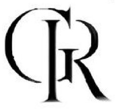
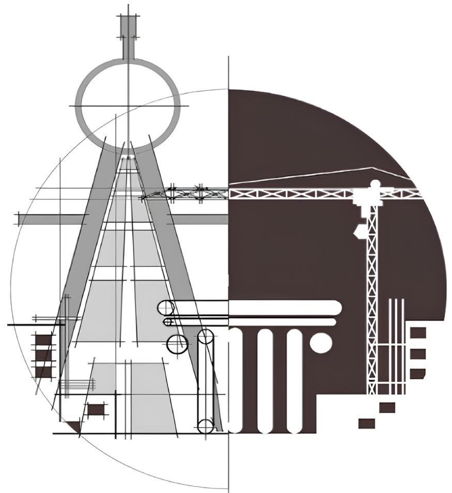
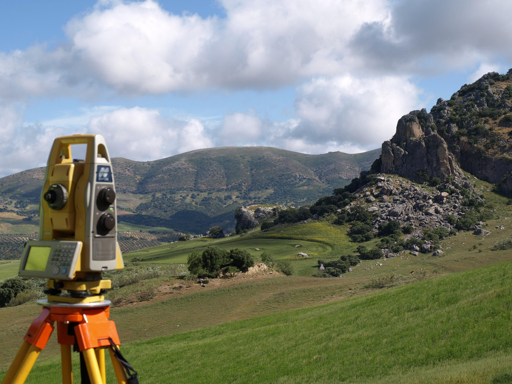
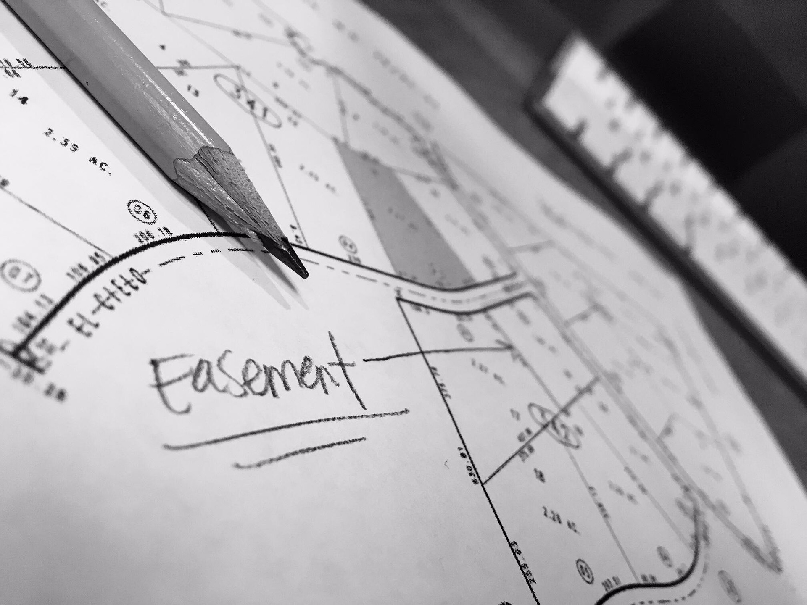
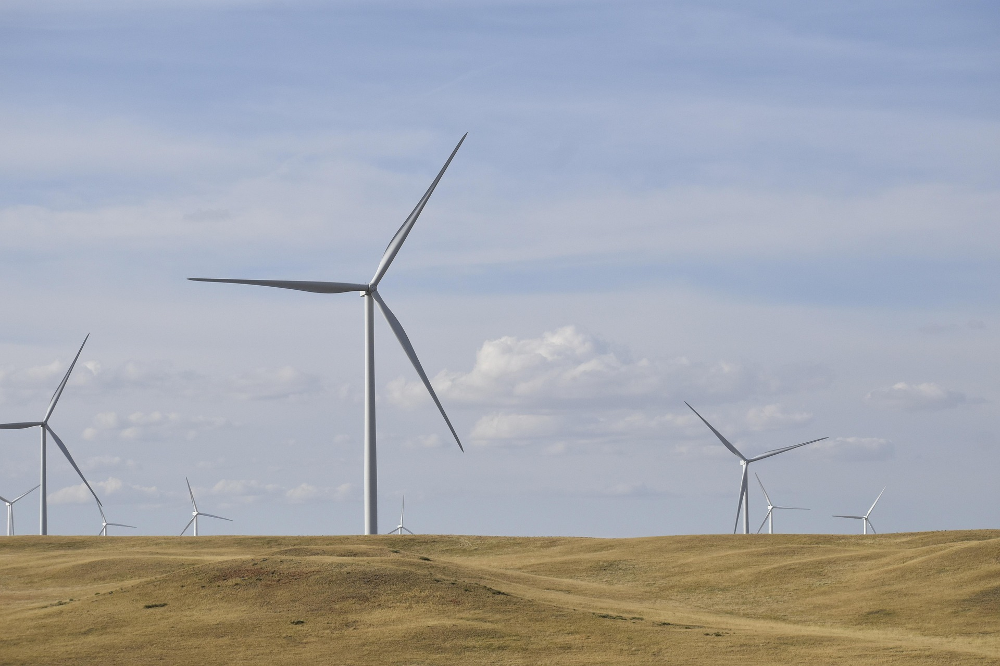

Progettazione
Progettazione architettonica e tecnica per ristrutturazioni, nuove opere e interventi edilizi, con elaborati chiari e conformi alla normativa.
AutoCAD
Progetto

Rocco Galasso Studio tecnico — GeometraStudio Tecnico — Geometra
Potenza e provincia (PZ)
Successioni, rilievi topografici, accatastamenti e frazionamenti, progettazione e direzione lavori, pratiche edilizie, sicurezza cantieri, contabilità
Soluzioni tecniche affidabili per privati e imprese

Cosa facciamo
Servizi tecnici per privati e imprese: dalla progettazione alle pratiche catastali, con strumenti digitali e rilievi sul campo. Le competenze strumentali sono indicate su ogni ambito.
Progettazione architettonica e tecnica per ristrutturazioni, nuove opere e interventi edilizi, con elaborati chiari e conformi alla normativa.
Gestione operativa del cantiere, coordinamento delle imprese e supporto al committente, con verifiche di conformità esecutiva.

Rilievi plano-altimetrici, confini e tracciamenti, con supporto alle fasi progettuali e catastali tramite strumentazione GPS.

Accatastamenti, variazioni, aggiornamenti di mappa e frazionamenti, per la corretta rappresentazione e regolarità degli immobili.

Gestione delle pratiche e degli adempimenti tecnico-amministrativi per avviare e concludere correttamente gli interventi.

Supporto e coordinamento degli aspetti di sicurezza in cantiere, con gestione documentale e verifica delle prescrizioni operative.

Redazione di contabilità, SAL e riepiloghi economici per tenere sotto controllo tempi, quantità e costi durante l’esecuzione.
Assistenza nelle procedure di successione e nelle pratiche correlate agli immobili e alle titolarità.
Consulenza per impianti eolici e fotovoltaici: fasi autorizzative, integrazione urbanistica e supporto tecnico per valutare fattibilità e vincoli sul territorio.

Analisi preliminare del sito, vincoli paesaggistici e urbanistici, supporto nella documentazione tecnica per istanze e autorizzazioni.
Verifiche di copertura, ombreggiamenti, integrazione architettonica e supporto alle pratiche edilizie e catastali connesse all’impianto.
Studio
Professionista iscritto all’ordine, attivo a Potenza e provincia con attenzione alla qualità tecnica e alla relazione con il cliente.
Indirizzo: Frazione Ciccolecchia, 36 — 85021 Avigliano (PZ)
Telefono:
+39 0971 64274
Mobile:
+39 347 880 3085
Email:
geom.roccogalasso@gmail.com
Oltre 30 anni di attività a Potenza e provincia, nell’area metropolitana lucana.
Formazione
Certificazioni